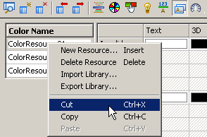
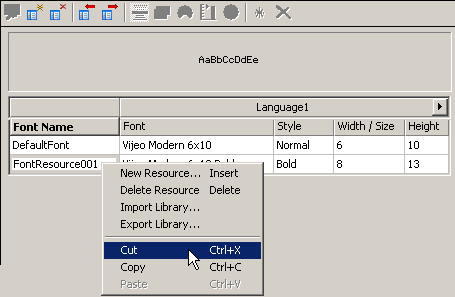
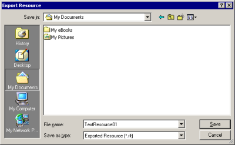
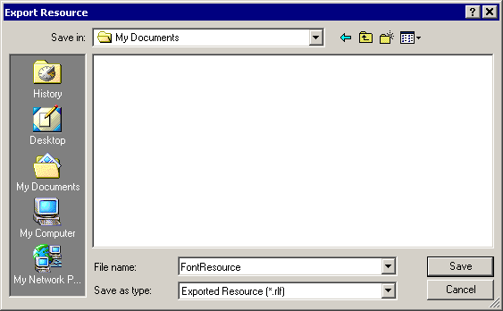
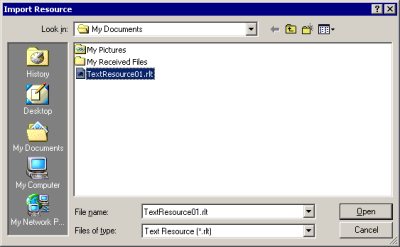

|
|
|
|
|
|
|
|
Copying resources between targets and projects enables you to share common state information from one project to another and gives a consistent look and feel across the your entire company’s offerings.
You can copy resources using one of these methods:
Use the copy/paste command to copy resources between targets in the same project. Use the export resource and import resource commands to copy resources from one project to another.
In the resource editor, right-click the Resource ID name and click either Cut or Copy.
Color, Text, or Image Resource

Font Resource

You can paste the resource to any target in the project.
Right-click the Resource name in the Resource Editor and click Paste.
The resource is added using the same resource name. If a resource with the same name already exists, the application confirms adding a new resource with the default name.

When an object uses a resource and you copy/paste the object from one target to another, the resource is also copied and pasted. If a resource with the same name already exists, the resource is not copied/pasted. The object uses the existing resource if the object is supported by the resource. If the resource does not support the object, then it adds a new resource with the default name.
Select the resource you want to share, then click the Export Resource icon .
In the Export Resource dialog box, define the folder and filename for the resource then click Save.
Color, Text, Image Resources

Font Resource
For Font Resources, all the resources in the Font Library are exported.

Open the project you want to import the resource into and select the appropriate Resource Library node.
Click the Import Resource icon .
In the Import Resource dialog box, identify the resource file to import and click Open.

The resource is added using the same Resource ID name. If a resource with the same name already exists, the application confirms adding a new resource with the default name.